Rant: Thoughts on Buddy Rich
Posted on December 20, 2020

When I took my deep dive into the ’89 Buddy Rich Memorial Concert, I had to watch most of it on YouTube before I got my hands on my own copy (which is much too difficult — shame on you Alfred!). Of course, I often wandered into the comments section on these videos, and amongst all the praise for these great drummers I started noticing comments that were… a little dismissive. All these years later apparently some people are not impressed with how the players do Buddy justice.
From Steve Gadd:
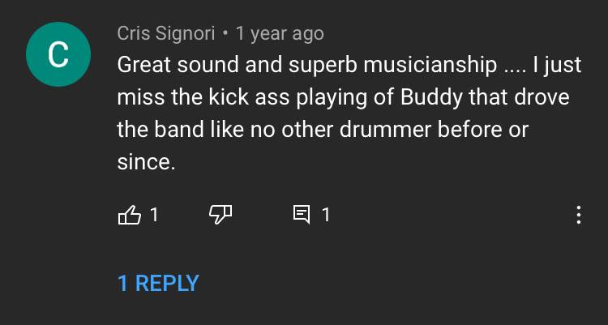 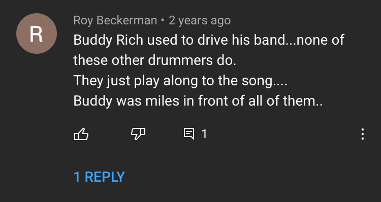From Gregg Bisonette:
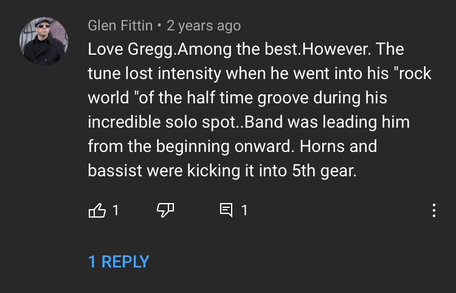 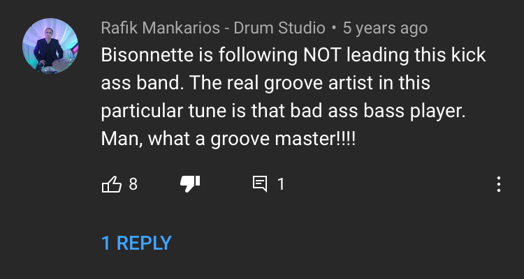
From Vinnie Colaiuta:
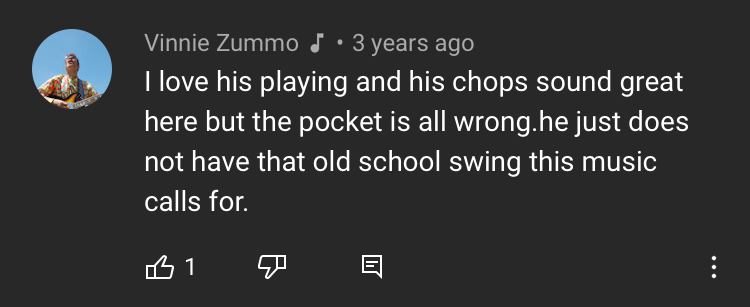 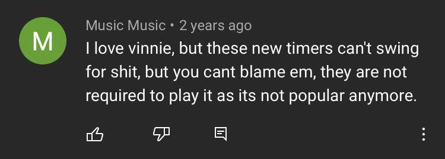From Dennis Chambers:
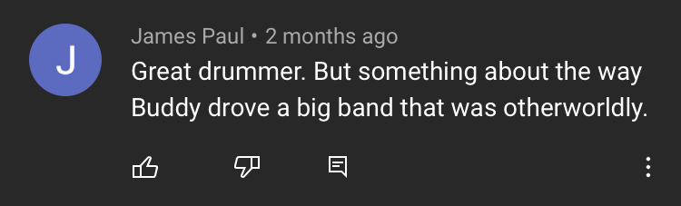 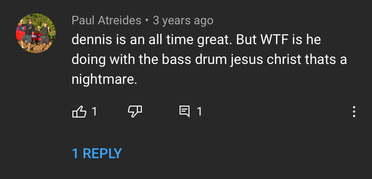
From Dave Weckl:
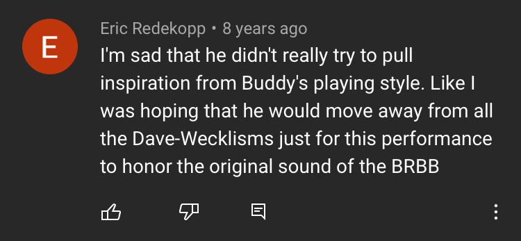 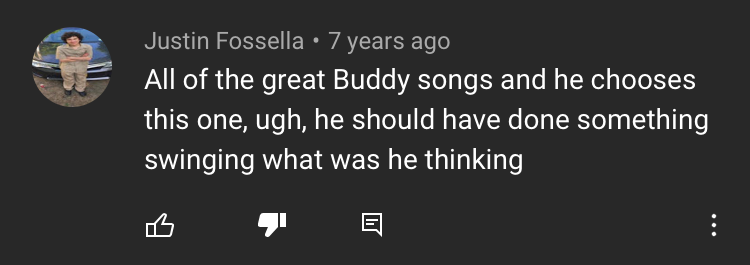From Louis Bellson:
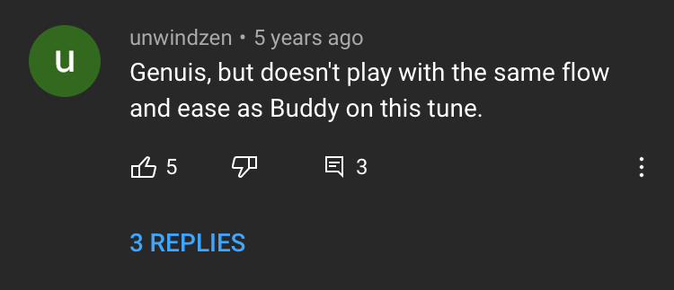 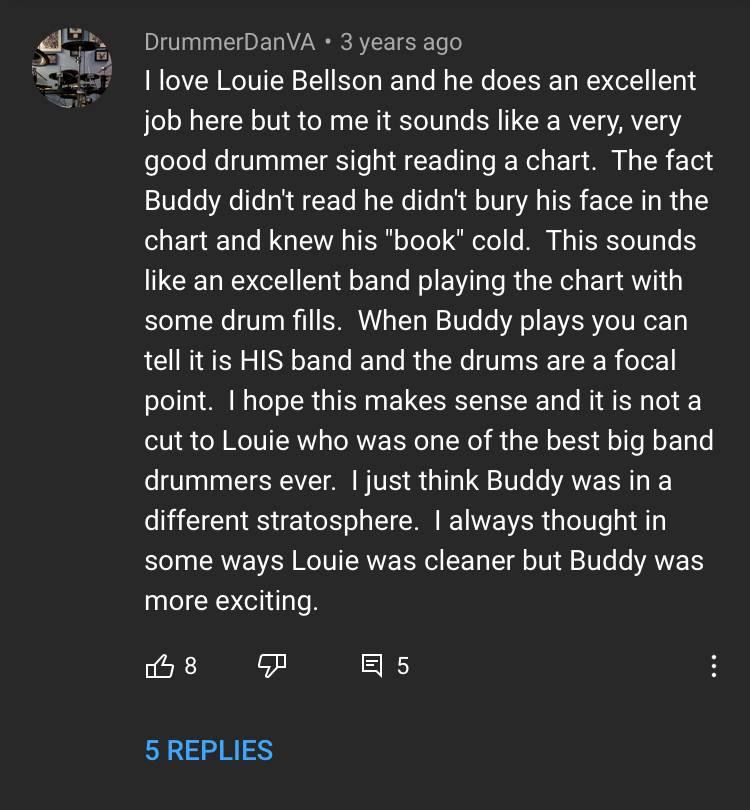So. Right. If you’re like me, then you probably have no idea what the hell these people are on about. These comments are philosophical and abstract, but in way that doesn’t seem to actually get at anything — sadly, that’s the way most drummers on YouTube are. Many like to post videos with esoteric topics; I think everyone wants to be an Adam Neely/12Tone/Rick Beato, but when drummers get to sermonizing I tend to walk away more confused than before.
This all reminds me of a review of Whiplash I found back in the spring of 2015, from a blog called JazzIsTheWorst. Unfortunately the blog appears to be dead now, but the review is freaking hilarious, and towards the end it has this nugget:
...The kid finishes his drum solo and the audience is silent… probably because like most Jazz audiences they have no fucking idea what’s going on at all times. If you’re at a Jazz show you just wait for other people to clap and then you clap too...
Every once in a while, someone on r/Drums will post something asking (in earnest) why “so-and-so” is a good drummer. While it seems naïve, I appreciate those questions, and they deserve to be asked. I think in the drumming world, opinions tend to snowball, i.e. if enough people say a drummer is good, everyone will believe it. I mean, Buddy is supposed to be the greatest drummer in history, a player that nobody can hang with. You gotta rep that position, lest you look unknowledgeable.
A few months ago, Todd Bishop shared a blog post over on CruiseShipDrummer where he discussed Rufus Jones, a chop-centric jazzer who’s drum solos are beloved by many. Todd, however, was unimpressed by Jones’ solo work — the post linked a video featuring Jones playing with a trio, and he uses a laid-back blues tune as an opportunity to blast off into a very aggressive “Moby Dick” style solo. Don’t take it from me:
Todd had a hard time making sense of the praise that was being heaved onto Jones in the comment section of the video. I’m in the same boat; I do find the performance to be quite jarring. Funny thing, both Todd and myself find Jones to be very skilled at playing with an ensemble. Read the CruiseShipDrummer post to see the songs Todd linked — when he’s with a band, Jones swings hard and has some tasty fills.
When I first read Todd’s thoughts, I was reminded of Buddy, because for me he’s actually the opposite. I think Buddy is a really talented soloist, but I’ve never been too impressed by his playing with the rest of the band. I have a lot of Buddy’s music in my library because he a great taste in charts, but I tend to enjoy the other players more so than Buddy. Unlike Jones, I don’t think Buddy ever plays with questionable taste, but all the while I’ve never been too impressed by one of his fills, or the way he catches a figure.
I don’t want to hate on Buddy too much, because he was a talented dude and did a good job of navigating challenging music. But when I first listened to John Bonham when I was 16, I couldn’t get enough of him, even though much of his playing is now rote in the 21st century. I never really had those moments for Buddy, outside of watching him solo — he’s a very entertaining drummer to watch.
There are a few people on YouTube who are brave enough to comment about how they struggle to understand the Buddy’s hype. Responses often involve something like “well, have you seen him live?”. I get the response, because watching Buddy is where most of the fun is at. In fact I think there’s are growing number of drummers who aspire to be visual performers, but I think music shouldn’t need a visual component. First and foremost, music uses sound. I wouldn’t want to detract from the skill or the artistry involved in these performances, but it’s not at all what I’m interested as a musician. The fancy BYOS snare stuff I see on YouTube is good fun, but it leans so much into the visual spectacle that the playing feels severed from what I want out of music.
I’m really not sure what these folks commenting on the Memorial Concert are trying to say. And look, analyzing drummers is difficult. If it’s not some random YouTuber, it’s someone like Polyphonic; the channel posted a video about Bonham a few years ago. Although Bonham might be one of the most famous “drummy” drummers out there, the video didn’t provide many insights to those familiar with his playing. Have a watch for yourself. My favorite part is the discussion about the track “Fool In The Rain”, which is just… well:
...Theres a lot going on this beat, so let’s see if we can’t break it down. So first of all, the beat is polyrhythmic, meaning that there are two different rhythms happening simultaneously. One of the rhythms comes from the hi hat, where Bonham lays down steady triplets, opening and closing the hats for emphasis on certain notes. He compliments this with ghost notes on the snare, notes which are barely audible, and more meant to provide a feel to the song than anything else. Beneath this comes the second rhythm, where Bonzo plays a swung half time shuffle on his bass and snare. As if the beat wasn’t enough, the piano and guitar lines are playing in 12/8 time over 4/4 beat. This gives a syncopated triplet feel to the song, thats impossible not to get with...
Oof. Now, whether or not any of that music theory stuff is even correct is sort of besides the point. The shuffle Bonham plays on “Fool in the Rain” sounds great because it has a unique feel to it, it fits the song well, and it is a great example of how to take someone else’s idea and put your own spin on it. It’s not because the groove “polyrhythmic” — FWIW, it is in fact not polyrhythmic, although as I have written in the past, this is an increasingly frustrating discussion to be had on the internet. I guess when people aren’t aimlessly philosophizing, they need to throw around music theory terms like “polyrhythm” with no rhyme or reason. Ugh.
Maybe one of these days I’ll take a closer look at Buddy’s playing, but I haven’t been to inspired to put the work in. I tend to not want to make the effort to enjoy something, but maybe there’s hope for me and Buddy yet.
Personally, I think all those commenters can shove it. I don’t want to hear you whining about Steve Gadd when you can’t even articulate why Buddy is so great. To be clear, I don’t think Buddy is a bad drummer, but I was so taken aback by how much rambling worship he still has. For some of the other famous drummers out there (like Bonham or perhaps Neil Peart), immitation is usually met with much more respect. I simply can’t deny the fact that I’ve learned much more from Gadd than Buddy. I’m not even sure I could tell you what Buddy’s signature licks are, aside from playing singles as fast as possible. Not to mention poeple such as Gadd actually appear to be nice human beings.
Tags: 2020 • Rants & Raves • Buddy Rich